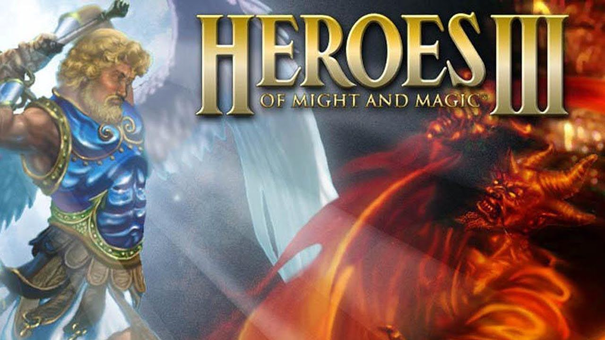
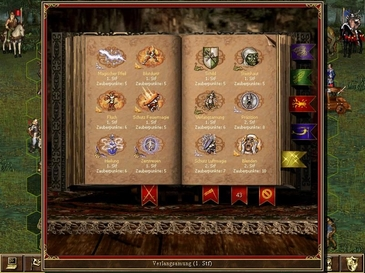

Heroes Of Might And Magic 3 is a turn-based strategy game released in 1999. It is widely considered as one of the best games in the genre, with a loyal fan base and a thriving modding community. I have been playing and creating content for this game since I was a kid, and I want to share my passion and expertise with you.
The gameplay is very similar to its predecessors in that the player controls a number of heroes that command an army of creatures inspired by myth and legend. The gameplay is divided into two parts, tactical overland exploration and a turn-based combat system. The player creates an army by spending resources at one of the eight town types in the game. The hero progresses in experience by engaging in combat with enemy heroes and monsters. The conditions for victory vary depending on the map, including conquest of all enemies and towns, collection of a certain amount of a resource, or finding the grail artifact. If a player loses all of their towns they will have seven game days to capture a new town. If they fail to do so they lose and the game ends. If a player loses all their heroes and towns, they will lose the game.
There are two "layers" to the world map: the aboveground and the underground. There are typically subterranean gateways that lead to and from the underground. Maps are filled with a huge variety of buildings, treasures, monsters, mines and so forth that reward extensive exploration. At the very least, a player must locate mines and flag them (whereupon they provide constant resources), since these resources are required to develop towns. The player must also develop their heroes' primary and secondary skills, both by battling creatures (and enemy heroes) and by acquiring artifacts or visiting special locations. Heroes are given a choice of skills to upgrade upon leveling up, as well as becoming better at combat or using magic. The skills must be chosen carefully, since they are permanent and only a limited number of skills can be learned.